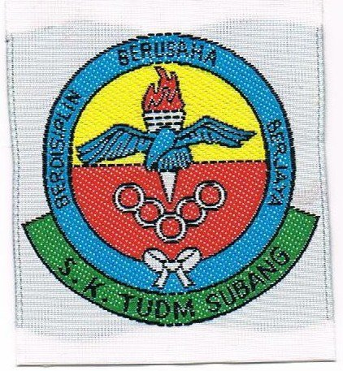

AKMAL'S EDUCATION
SK TUDM SUBANG >> SMK SHAH ALAM >> UITM MERBOK KEDAH

CLICK THE LOGO TO VISIT OFFICIAL WEB/FACEBOOK PAGE
SK TUDM SUBANG
I attended primary school at SK TUDM SUBANG. when my father was still serving at air force base there. I like my primary school because of many reasons and some of them are:
1. the school was very close to my house,it was a 5 minute walk.
2. extra safety because the school is in the military base.
3. most of my friends are my neighbors so its easy to make "after school plans".
SMK SHAH ALAM
I attended high school at SMK SHAH ALAM. I like my high school because of many reasons and some of them are:
1. the school was very close to my house,it was a 5 minute walk.
2. had so many fun and interesting event at school during my study years at school.
3. everyone was so friendly.
UITM MERBOK KEDAH
I am currenty continue my study at UITM MERBOK KEDAH. I continue my major in Diploma in Library Management. i took this course because of one reason only.
1. NO MATHEMATIC !!!